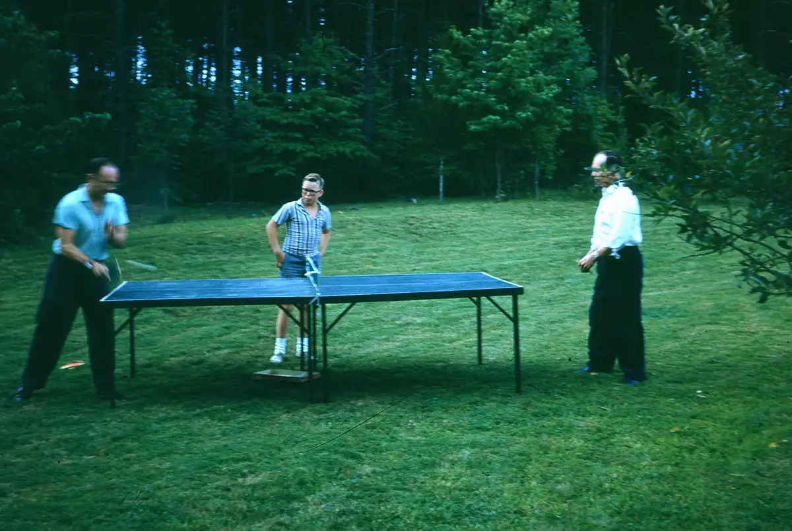

Home / Slides / Tray-06-David / tray-06-slide-01
tray-06-slide-01
← Return to Tray-06-David
← Prev tray-06-slide-02 →
This looks like brothers Grafton and W.I. Jenkins playing ping-pong at Grandpa's house. I don't recognize the man in the middle. If I'm not mistaken, that is the same ping-pong table that was with us in the basement of the house in Chester up until the mid-1990s.

Actual size: 1.30" × 0.87" · Scanned at: 1800 dpi · 3.67 MP (2339×1570) · Image date: 21 May 2005 · Comment date: 21 May 2005
Copyright © 2005–2026 Thomas Krehbiel. Images are freely distributable for personal use. For more information about these images contact Thomas Krehbiel (tkrehbiel@gmail.com).
Photos were scanned at either 300dpi or 600dpi, depending on the quality of the photograph. Slides were scanned at 1800dpi. Documents were scanned at 100dpi or 150dpi. Photoshop enhancements: most images have had their contrast improved. Some color photos were corrected to restore color balance. Some blurry images were mildly sharpened. Occasionally dust, scratches, and blemishes were removed digitally.
{kind=link}